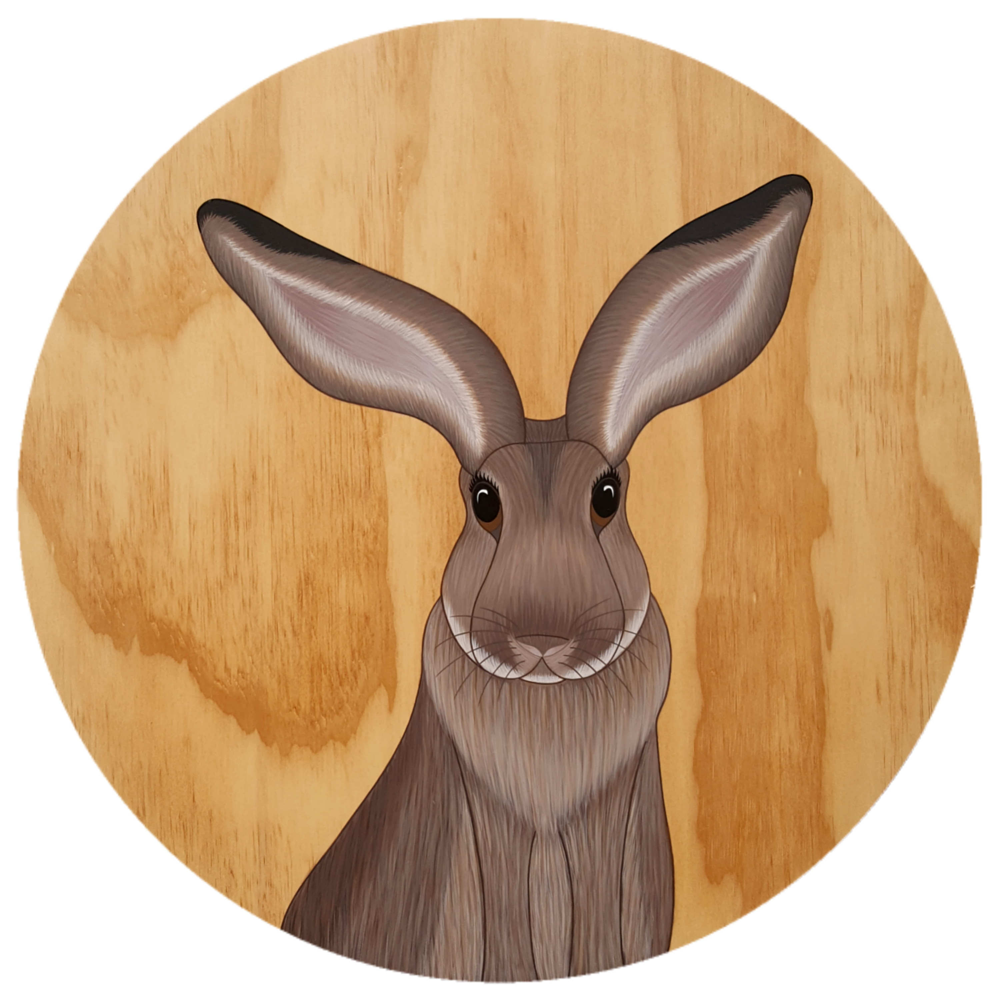
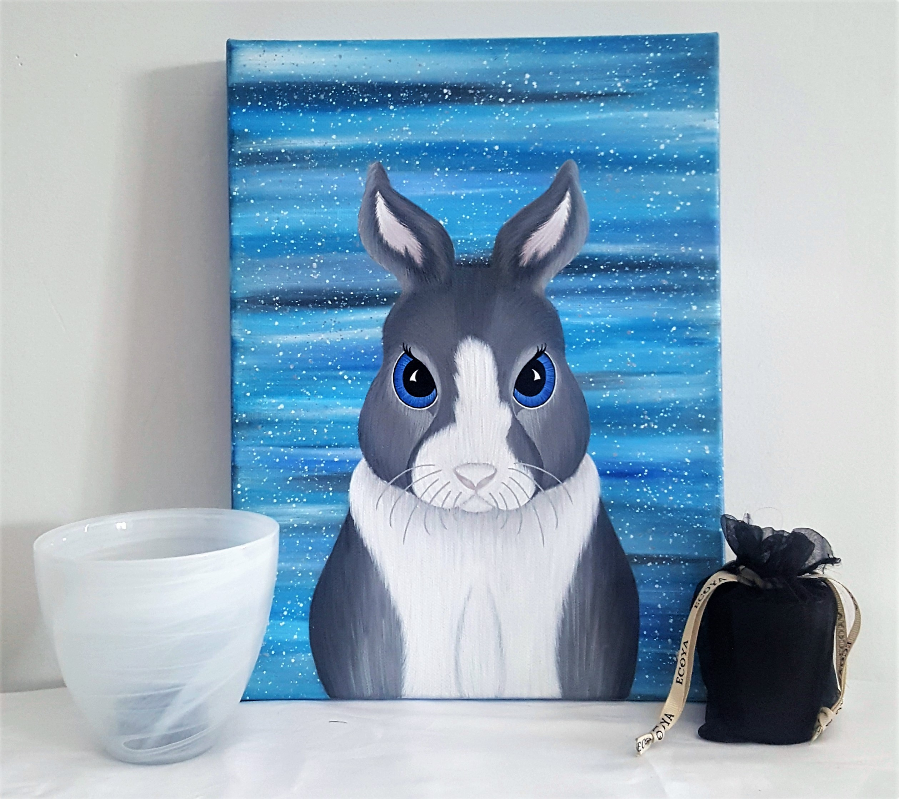

Favourite medium - Acrylic paint
Stephanie Cheer is a Wairarapa based Artist that works and studies through The Learning Connexion from home. She has always had a love for painting, drawing and anything art related.
Stephanie does a variety of work on canvas and plywood rounds and uses acrylic paints. She gets her inspiration from her environment, things that surround her and her interests. She loves animals, New Zealand wildlife, nature, dreamcatchers, feathers, crystals and the moon. Her animal paintings are usually on plywood rounds and she likes to leave the wood grain as the background to give them more of a natural look. She enjoys playing around with new ideas and experimenting to see what else she can do. She does original work, some commissioned work and can also do prints of her work.
Stephanie has permanent double vision that makes painting and drawing more challenging, she has learnt to work with it and find ways that work for her so that she can continue her art journey and work towards her dream of doing art full time.
To see more of her work or to contact her please visit her Facebook page - https://www.facebook.com/StephanieCheerArtist/
Email - slcheer89@gmail.com